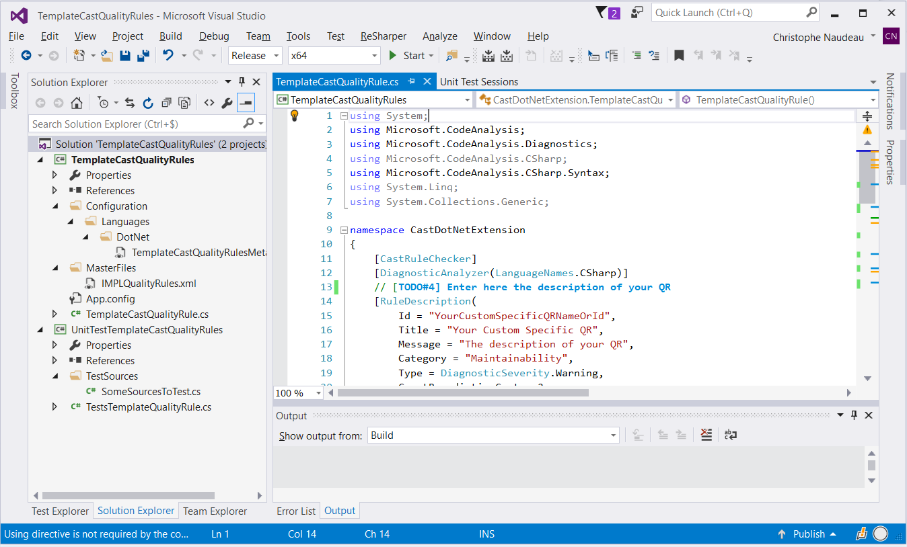
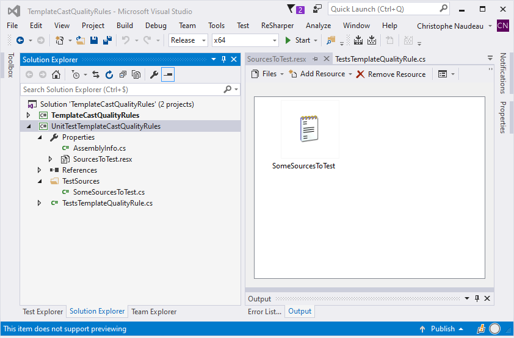
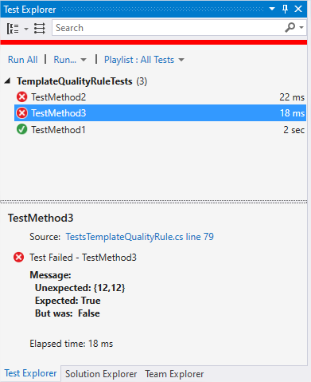

Dotnet Analyser specificities¶
Presentation¶
This document describes a way to implement DotNet Quality Rules (aka QR) based on Microsoft DiagnosticAnalyzer framework using an SDK named CastDotNetExtension.
These QR can be written in C# language and are designed to be processed by the analyzer itself, using its own environment (i.e. the context of the analysis).
In a nutshell, this mechanism allows a user to attach callback functions to some nodes of an AST generated by Roslyn. During the visit of this AST by the analyzer, these functions will be automatically called each time these nodes are encountered.
A template has been developed to help implementing these rules and the corresponding unit tests (independent from Cast ecosystem).
Description¶
During its initialization, the DotNet analyzer browses through all the existing extensions and searches for all the assemblies which name contains “CastQualityRules” (e.g. “RobustnessCastQualityRules.dll”). These assemblies will then be loaded and all the QRs will be added to the analyzer’s internal QRs list.
To identify a QR, the analyzer will look at 2 points:
- A QR is a class inheriting from CastDotNetExtension.AbstractRuleChecker.
- Some mandatory annotations should be present to activate and identify the QR.
The AbstractRuleChecker class¶
This class is the backbone of a QR. It contains all the methods and properties required to define and execute a QR. It will also provide the results after being processed.
To create a QR, you have to inherit from this class and override the abstract method “Init”. Here you will declare all the associations between AST nodes and the corresponding callbacks.
In these callbacks you can call the method “AddViolation” to record a new violation of the QR.
Then, you can get the results through the “Violations” property.
Example¶
First, let’s see a simple example of a basic QR: Avoid Using Goto in your code.
Here would be the implementation of this rule, based on AbstractRuleChecker:
public class AvoidUseOfGoto : AbstractRuleChecker
{
public override void Init(AnalysisContext context)
{
context.RegisterSyntaxNodeAction(this.VisitGoto, SyntaxKind.GotoStatement);
}
private void VisitGoto(SyntaxNodeAnalysisContext nodeContext)
{
AddViolation(nodeContext);
}
}
In this example, we have declared the callback function: VisitGoto. Then we have associated this function to a type of nodes (SyntaxKind.GotoStatement) using the method AnalysisContext.RegisterSyntaxNodeAction().
Presentation of the API¶
namespace CastDotNetExtension
{
public abstract class AbstractRuleChecker : DiagnosticAnalyzer, IDisposable
{
protected AbstractRuleChecker();
protected AbstractRuleChecker(ViolationCreationMode creationMode)
public virtual string GetRuleName()
public override ImmutableArray<DiagnosticDescriptor> SupportedDiagnostics { get; }
public abstract void Init(AnalysisContext context);
public virtual void Reset();
public void AddViolation(SyntaxNodeAnalysisContext node, bool setBookmark = true);
public void AddViolation(SyntaxNodeAnalysisContext node,
IEnumerable<FileLinePositionSpan> bookmarks);
public void AddViolation(ISymbol symbol, IEnumerable<FileLinePositionSpan> bookmarks,
SyntaxTreeAnalysisContext context);
public void AddViolation(ISymbol symbol, IEnumerable<FileLinePositionSpan> bookmarks);
public ViolationBuilder Violations { get; set; }
public ParameterValue GetParameterValue(string name);
public ILog Log;
public ISymbol GetSymbol(SyntaxNodeAnalysisContext node);
}
}
“AbstractRuleChecker” Constructor¶
A creation mode can be provided in order to indicate the kind of bookmarking that will be applied:
- NoViolation: no bookmark registered. Usually used for metrics.
- OneViolationPerNode: Each AST node or bookmark provided will be registered as a violation with one bookmark.
- ViolationWithAdditionalBookmarks: When reporting a violation with a list of bookmarks, only one violation will be recorded at the first position of the list, the remaining bookmarks will simply be associated to it as “additional bookmarks”.
The default value is “OneViolationPerNode”.
“Init” Method¶
This method will be automatically called each time a new context is setup in the analyzer (i.e. before starting the visit of an AST).
This method must contain the registrations of all the callback functions you want to set up.
A callback function must have the following signature:
private void <NameOfTheFunction>(SyntaxNodeAnalysisContext nodeContext)
Where <NameOfTheFunction> is the callback’s name of your choice.
Note: Init is an abstract method therefore it must be defined for each QR.
“Reset” Method¶
This method optional. It is virtual and can be overridden if you need to initialize and/or clean your own specific data.
This function is called during the initialization (just before calling the aforementioned “Init” method) and when the QR is being disposed of.
“AddViolation” Methods¶
The purpose of this method is to record a new violation for the current instance of the QR.
If a context is provided, then the diagnostic will also be reported to the CodeAnalysis environment (calling ReportDiagnostic method on the given context)
This method has 4 overloads:
- Automatic bookmarking. Depending on the value of the setBookmark parameter, this method will add a violation at the position of the given node (setBookmark=true) or at the position of the containing symbol (setBookmark=false).
public void AddViolation(SyntaxNodeAnalysisContext node, bool setBookmark = true);
- User bookmarking. The violation will be recorded with the given bookmarks. If the list of bookmarks is empty, then the behavior is the same as the previous overload with setBookmark=false.
public void AddViolation(SyntaxNodeAnalysisContext node,
IEnumerable<FileLinePositionSpan> bookmarks);
- User symbol and User bookmarking. The violation will be recorded with the given bookmarks and associated to the given symbol (ISymbol type). The SyntaxTreeAnalysisContext parameter is only provided to report the diagnostic to CodeAnalysis environment.
public void AddViolation(ISymbol symbol, IEnumerable<FileLinePositionSpan> bookmarks,
SyntaxTreeAnalysisContext context);
- User symbol and User bookmarking. The violation will be recorded with the given bookmarks and associated to the given symbol (ISymbol type).
public void AddViolation(ISymbol symbol, IEnumerable<FileLinePositionSpan> bookmarks);
“GetSymbol” Method¶
This function returns the closest symbol containing the given node.
Note: a symbol has the same definition as in Roslyn: it represents a symbol (namespace, class, method, parameter, etc.) exposed by the compiler.
“GetRuleName” Method¶
This method returns the Title property of the configured RuleDescription attribute (see below).
“CastPropertyName” Method¶
This property contains the name of the QR in the Cast analyzer ecosystem, i.e. the MetaModel property name qualified with the containing category name.
Example: “AvoidUsingGoto.number” where “AvoidUsingGoto” is the category and “number” is the property.
The value of this property is automatically set when the QR is loaded from the extension (see the RuleDescription Attribute description below)
“Violations” Property¶
This property is valued with the list of all the violations found during the visit of an AST. In other words, all the violations, added using the AddViolation method, are stored in this property.
“GetParameterValue” Property¶
This method retrieve the parameter value given a parameter’s name. The name is one of those defined in the AssessmentModel (in IMPLParameters.xml file). It returns an object of the ParameterValue class.
“Log” Property¶
This property is based on Log4Net
Annotations identifying a QR¶
Your specialization of CastDotNetExtension.AbstractRuleChecker allows you to implement the QR behaviour. But the analyzer will need some way to identify the QR and this is done using annotations.
There are 3 annotations which must be associated with your QR: CastRuleChecker, DiagnosticAnalyzer and RuleDescription.
CastRuleChecker annotation¶
This annotation is very simple and not parametrized. It is merely a flag indicating to the DotNet Analyzer that this is an active CastDotNetExtension.
If this annotation is removed, then the analyzer will simply ignore this QR.
DiagnosticAnalyzer annotation¶
This annotation is used by Microsoft.CodeAnalysis mechanism. It is parametrized by the language of the code to analyze. Typically, LanguageNames.CSharp, LanguageNames.FSharp or LanguageNames.VisualBasic.
RuleDescription annotation¶
This annotation is used to provide some functional information about the QR. It is parametrized by 2 types of data:
All the parameters required by Microsoft.CodeAnalysis.DiagnosticDescriptor such as its Id, Title, Description, etc. All these data are used by the Microsoft.CodeAnalysis environment.
- One Cast specific AND mandatory parameter: CastProperty which must be valued with the MetaModel Property name (qualified by its Category name) corresponding to the QR you are defining. E.g. “AvoidClassesWithTooManyConstructorsAnalyzer.number”.This information will be the one stored in the ViolationName property of the AbstractRuleChecker class.
Example: The example seen above would become this:
[CastRuleChecker]
[DiagnosticAnalyzer(LanguageNames.CSharp)]
[RuleDescription(
Id = "AvoidUseOfGoto",
Title = "Use of goto statement",
MessageFormat = "Avoid using goto statement other than goto case",
Category = "Maintainability",
DefaultSeverity = DiagnosticSeverity.Warning,
ConstRemediationCost = 2,
CastProperty = "AvoidUseOfGoto.number"
)]
public class AvoidUseOfGoto : AbstractRuleChecker
{
public override void Init(AnalysisContext context)
{
context.RegisterSyntaxNodeAction(this.VisitGoto, SyntaxKind.GotoStatement);
}
private void VisitGoto(SyntaxNodeAnalysisContext nodeContext)
{
AddViolation(nodeContext);
}
}
Creating a QR with CastDotNetExtension¶
Now that we have seen how to implement the QR, we need to see how it can be turned into an extension that can be integrated into the Cast environment.
An extension is basically one (or more) assemblies providing some services (analyzer, QualityRules or Dataflow computation, etc.) It should come in a package of self-sufficient assemblies and configuration files. Practically, this usually means providing all the external assemblies required by the QR, the MetaModel and AssessmentModel files.
In order to ease the development of these extensions, Cast provides a small Development Kit containing a simple template of an extension (i.e. TemplateCastQualityRules) and a basic Unit Testing project (i.e. UnitTestTemplateCastQualityRules). These 2 projects come ready to use and they contain all the required assemblies.
A Visual solution and the 2 projects are provided in order to set everything in place: TemplateCastQualityRules.sln
{kind=link}
Figure 1 - The CastDotNetExtension template solution
In this template, all the names are obviously generic and should be changed to adapt to your own needs. This applies of course to the name of the QR but also to all the files and projects (sln, csproj and xml files).
Using TemplateCastQualityRule project to implement a QR¶
This is the central project of the solution. Building this project will generate a ready to use extension. Therefore, you have to provide a name for the resulting assembly corresponding to the set of QRs it will contain. You are free to give any name as long as it ends with the discriminating postfix “CastQualityRule”. E.g. PerformanceDiagnosticsCastQualityRules.dll
Note: In order to help using the template, we have added some tags in the files of the project and in this doc in order to easily find each element. These tags are as follow: [TODO#<index>] where <index> is a number. E.g. [TODO#1], [TODO#7], etc.
MetaModel¶
The project contains some nested folders (“Configuration\Languages\DotNet”) that should contain all the MetaModel xml files required by your extension.
You can have as many files as you wish with any name as you like but these names must end with the “MetaModel.xml” postfix. E.g. PerformanceDiagnosticsMetaModel.xml. At runtime, all the MetaModel files will be loaded and aggregated in memory.
In Cast products each QualityRule is identified by a property. It can be identified in 2 ways:
- The property name (qualified with the name of the category it belongs to).Ex: “ExampleCustomQualityRules.myQualityRule”
The property id (numerical) that must be unique (among the other property ids). See below.
<metaModel file_level="client" file_no="99">
<!-- your declarations here -->
</metaModel>
absolute_id = 2000000 + 1000 * file_no + rid
For more information on this topic, please refer to http://cast-projects.github.io/Extension-SDK/doc/writing_quality_rule.html#metamodel-ids
To declare the QR, you have to declare one property per QR. Each of these properties must belong to a category. You can associate as many properties as you want to a single category. This is [TOTO#1].
Note: The Category and Property sets of ids are independent and so you can have the same id for a Category and a property.
Here is a minimal QR MetaModel declaration:
<category name="ExampleCustomQualityRules" rid="61">
<description>Example of a list of Custom Quality Rules</description>
<property name="qualityRuleOne" type="integer" merge=”sum” rid="8">
<description>Example of a Custom Quality Rule</description>
</property>
<property name="qualityRuleTwo" type="integer" merge=”sum” rid="17">
<description>Another example of a Custom Quality Rule</description>
</property>
</category>
In addition to this basic declaration, you need some additional data (i.e. attributes) in order to be compatible with all the AIP’s applications:
<category name="ExampleCustomQualityRules" rid="61">
<description>Example of a Custom Quality Rule</description>
<property name="qualityRuleOne" type="integer" merge=”sum” rid="8">
<description>Example of a Custom Quality Rule</description>
<attribute name="INF_TYPE" intValue="3333333"/>
<attribute name="INF_SUB_TYPE" intValue="17" />
<attribute name="ACCESS_APPVIEW" intValue="1" />
<attribute name="ACCESS_HTML" intValue="1" />
<attribute name="ACCESS_CVS" intValue="1" />
</property>
</category>
Only 2 of these additional attributes are to be changed here: “INF_TYP” and INF_SUB_TYP”. These 2 data are somehow equivalent to the Category and Property MetaModel and are still in use by some applications from AIP ecosystem. You should have a range of possible values for these. Note that uniqueness here is on the pair of id (INF_TYP / INF_SUB_TYP).
Usually, we choose one INF_TYP value for an analyzer or an extension (or even a “kind” of data) and we list all the QR by increasing the INF_SUB_TYP value from zero.
Finally, all the declared QualityRules have to be associated with the DotNet analyzer so that the system can process them.
To do so, you have to make the category “CAST_DotNet_Metricable” inherit from all these newly created categories [TODO#2].
Note: “CAST_DotNet_Metricable” is a partial category so you can have as many occurrences as you want. For instance, you can have several MetaModel files each of them containing this category with its local inheritances.
Example:
<partialCategory name="CAST_DotNet_Metricable">
<inheritedCategory name="ExampleCustomQualityRules"/>
<inheritedCategory name="AnotherListOfCustomQualityRules"/>
<inheritedCategory name="YetAnotherListOfCustomQualityRules"/>
</partialCategory>
MasterFiles¶
These files represent a fragment of an Assessment Model for an extension. An Assessment Model contains the settings to trigger the rule and to calculate the quality indicators, as well as the rule documentation. A full documentation or even training should be provided by a Cast Consultant but here we are only going to present the small part required to compute QualityRules in the current context.
The only 2 required files here are “IMPLQualityRules.xml” and “SPECDocumentation.xml”. They can be found in the “MasterFiles” folder of the project. Basic templates of these files are provided so you simply have to edit them to add all the QRs that have been developed. This will associate each MetaModel Property Id (which is internal) with the corresponding Violation Id (which will be published) and provide a documentation for each QR.
These two files contain a list of tags named <metric>, each of them containing the definition of a QR. You have to add a new metric tag for each of your QR [TODO#3].
First, you can define the documentation of your QR in the “SPECDocumentation.xml” file. Here you can specify the following data:
- id: this is the metric id of the QR, i.e. the identifier of the QR in the assessment model.Beware that this Id must be an EVEN number greater than 2 000 000.Usually a range should have been assigned to you. It must be unique in the whole Cast environment.
originalName: this is the name of the QR as it will appear in the resulting files.
<english></english>: tag that contain the documentation of the QR.
Example: SPECDocumentation.xml
<?xml version="1.0" encoding="utf-8"?>
<root>
<metric id="2010154" type="quality-rule" originalName="Example of a Custom Quality Rule" section="output">
<english>This is the description of the QR</english>
</metric>
</root>
Then you have to add the entries in IMPLQualityRules.xml. For each of metric tag, you have to setup at least 3 of its attributes:
- id: The same as in the documentation.
- originalName: The same as in the documentation.
- propertyID: this is the Cast MetaModel property id of the QR. The absolute id corresponding to the property you have declared in the MetaModel file.
We will not address the rest of Assessment model here. So, you can leave all the other tags with their default value for now.
Example:
<?xml version="1.0" encoding="utf-8"?>
<root>
<metric id="2010154" originalName="Example of a Custom Quality Rule" propertyID="2099017"
xxl="N/A" unify="N/A" type="quality-rule" executionLocation="N/A"
executionPrecedenceConstraint="N/A" scopeID="2001000" scopeLabel="SET_DotNet_Example"
diagnosisValueType="integer" localSiteInitialize="DSS_FILTER_SCOPE"
localSiteDiagnose="DSS_DIAG_SCOPE_GENERIC_NUM" localSiteCountViolations="count-distinct"
localSiteCountTotal="DSS_DIAG_TOTAL_GENERIC" centralSiteInitialize="N/A" />
</root>
QR implementation files¶
The template provides a typical implementation of a QR containing a generic implementation of each part.
Here is this generic implementation:
namespace CastDotNetExtension
{
[CastRuleChecker]
[DiagnosticAnalyzer(LanguageNames.CSharp)]
// [TODO#4] Enter here the description of your QR
[RuleDescription(
Id = "YourCustomSpecificQRNameOrId",
Title = "Your Custom Specific QR",
MessageFormat = "The description of your QR",
Category = "Maintainability",
DefaultSeverity = DiagnosticSeverity.Warning,
// [TODO#5] set the CastProperty to the qualified name of the Cast MetaModel property
// identifying the Quality Rule (in the form: "CategoryName.propertyName")
CastProperty = "CastCategoryNameOfTheQualityRule.propNameOfTheQualityRule"
)]
// [TODO#6] name the class according to your QR
public class TemplateCastQualityRule : AbstractRuleChecker
{
/// <summary>
/// Initialize the QR with the given context and register all the syntax nodes
/// to listen during the visit and provide a specific callback for each one
/// </summary>
/// <param name="context"></param>
public override void Init(AnalysisContext context)
{
// [TODO#7] register the callbacks:
context.RegisterSyntaxNodeAction(AnalyzeIfStatement, SyntaxKind.IfStatement);
}
// [TODO#8] Implement your callback function
private void AnalyzeIfStatement(SyntaxNodeAnalysisContext nodeContext)
{
var ifStatement = nodeContext.Node as IfStatementSyntax;
// [TODO#9] if a violation is found, store it using the following:
if (ifStatement != null && ifStatement.Else == null)
{
AddViolation(nodeContext);
}
}
}
}
Annotations: Setup the QR descriptor¶
First you have to fill the QR description parameters of the annotation RuleDescription.
You will find all the ones corresponding to the Microsoft.CodeAnalysis.DiagnosticDescriptor (Id, Title, etc.). This is [TODO#4].
Then you have to provide a value for the CastProperty parameter corresponding to the Category and Property names from the Cast MetaModel. This is [TODO#5].
Name the class¶
Since the name of the class will be the name exposed by the assembly, it should be unique amongst the DotNet analyzer extensions and represent your QR. This is [TODO#6].
“Constructor”¶
Public MyQualityRule() : base(ViolationCreationMode.ViolationWithAdditionalBookmarks) { }
“Init” method: Associate callback functions to some AST nodes¶
Edit the Init method in order to register all the callback functions with the AST node you want to be called during the visit by the analyzer. This is [TODO#7].
The AST nodes are members of the enum Microsoft.CodeAnalysis.CSharp.SyntaxKind.
The callback methods must have the signature defined above in this document (in the AbstractRuleChecker class description).
Declare your callback functions¶
All the functions associated to the AST nodes in the Init function must be declared here. This is [TODO#8].
This is here that you a supposed to compute and detect the violations. Once you have a result, you can store it by calling the AddViolation function. This is [TODO#9].
Miscellaneous¶
In addition to all this, you can add a “Reset” method (overriding the one from the base class), add a constructor or any data or methods you might be needing to implement your QR.
Build the project¶
Once you have built your project, you should get a folder Build\x64\Release (from the root of the project sources). This folder contains your extension that can be used directly with Carl. Before being able to use in with AIP you would have to build a whole Assessment model and register your extension in AIP environment (see AIP documents about extensions on this topic).
For your information, the files generated by the build process are:
- Your assembly is in the Build\x64\Release folder.
- The Metamodel file should have been automatically copied to the to Build\x64\Release\Configuration\Languages\DotNet
- The Assessment Model file should have been copied to Build\x64\Release\MasterFiles
Naming convention¶
The folder containing your extension must have a name respecting a specific convention: “com.companyname.extensionname.x.y.z-stageNNN”, where
- “companyname” is your company or organisation name
- “extensionname” is the name of your extension
- “x.y.z” is the numerical version of your extension (e.g. 1.7.2)
- “stage” (optional) is the release level of your extension (e.g. alpha, beta, etc.)
- “NNN” (optional) is the build number.
Example: “com.EID.DotNetQRExample.1.2.7” or “com.EID.DotNetQRExample.2.0.1-beta1243“
Using TemplateQualityRuleTests project to unitary test a QR¶
The template solution also provides a project named TemplateQualityRuleTests, intending to unitary test the QR. These tests are based on NUnit framework and are integrated into Visual Studio Test Explorer. The main advantage here is to be able to test the QR outside from any Cast environment such as AIP or Carl.
Setup the environment¶
First, you must add the assemblies containing the QRs to test to the references of the testing project.
Then you can add all the source codes that will be used to test the QRs to the resources of the project. To do so, you can add these source files to the TestSources folder. Then, open the “SourcesToTest.resx” (in the folder Properties) and then add all the files from TestSources.
You should get this kind of configuration:
{kind=link}
Figure 2 Add test files to the resources
Note: We advise you to edit the properties for these source files in order to prevent them from being compiled together with your code. To do so, change the “***Build Action*” from “***Compile*” to “***None*”.
Implement the test¶
As we saw for the implementation of the QR, we also provide a generic test case to test a QR. This frame can be replicated and adapted to the QR to test.
To test a QR, you have to use the CastDotNetExtensionChecker class. It is generic and is to be parametrized with the class implementing the QR to test. This checker will then be used in 3 steps:
- configure
- launch the analysis
- check the results
Here is the basic test method:
[TestFixture]
class TemplateQualityRuleTests
{
/// Implementation of the test using the following template
[Test]
public void TestMethod1()
{
// [TODO#10] load the source code to test from resources
// note: a source file should have been added to the resources
// using the Resource file "SourcesToTest.resx"
var testSrc = UnitTestTemplateCastQualityRules.Properties
.SourcesToTest
.SomeSourcesToTest;
// [TODO#11] create the checker object, parametrized with the type of the QR to test
var checker = CastDotNetExtensionChecker<TemplateCastQualityRule>.CreateInstance();
Assert.IsTrue(checker != null);
// [TODO#12] Configure the analysis
checker.AddAssemblyRef(@"C:\Examples\Packages\myAssembly.dll");
checker.AddSource(@"C:\Examples\Sources\toolbox.cs");
checker.AddSource(@"C:\Examples\Sources\Config.xml");
// [TODO#13] launch the processing on the given source code
checker.Apply(testSrc);
// [TODO#14] setup the expected bookmarks
checker.AddExpected(10, 8).AddExpected(15, 8);
// Launch the validation
checker.Validate();
// [TODO#15] Compare the results with the expectation
Assert.IsTrue(checker.IsValid(), checker.getStatus());
// NOTE: You can also check in more details:
// Assert.IsFalse(checker.ResultsMissing.Any());
// Assert.IsFalse(checker.ResultsUnexpected.Any());
}
}
Configure the checker¶
First you have to retrieve the source code that will be used to test the QR, i.e. extract it from the resources. This is [TODO#10].
Then you have to create an instance of the checker providing the class to test as a generic parameter. Here, the generic parameter “TemplateCastQualityRule” must be replaced by the name of the class to test. This is [TODO#11].
Optionally, you can add all the references and additional files that could be required to fulfill the analysis. This is [TODO#12].
Launch the analysis¶
Once the checker has been configured, we call the Apply function of the checker in order to launch the analysis on the source code retrieved from the resources. This is [TODO#13].
Check the results¶
You can now add the expected results by adding the positions where some violations are supposed to be found. You can add as many bookmarks as you want, calling the AddExpected method for each of them. This is [TODO#14].
Note: Skipping this step allow you to check that no violations are supposed to be found in order to implement some negative tests.
Then, the validation is executed by calling the Validate method.
Finally, you can compare the results with the expectation using one of the information provided by the checker:
- “IsValid” function: return true if the results are equal to the expectation.
- “getStatus” function: return a string listing the differences found.
- “ResultsMissing” property: a list of all the expected bookmarks missing from the results
- “ResultsUnexpected” property: a list of all the results produced but not expected.
Launch the tests¶
Once your extension and its related tests have been built with success, you should find all your test cases in Visual Studio Test Explorer.
Note: Using a Visual Studio 2017 or older, requires the installation of the “***NUnit 2 Test Adapter*”.
Tip: Do not forget to set the “Test Settings / Default Processor Architecture” to “x64”.
Here is an example of the Test Explorer with 3 tests:
{kind=link}
Figure 3 Visual Studio Test Explorer
Integration in Carl¶
Once your extension has been successfully implemented, tested and the resulting folder renamed according to the convention, you simply have to copy this folder to Carl’s “extensions” folder.
Then you can launch Carl with your newly implemented extension on a bunch of C# sources.
Example:
C:\CAST\com.castsoftware.carlcli.2.0.0-beta9> CarlCLI.exe -s C:\SRC\examples -o C:\CarlOut -a Test
Finally, you can retrieve the results in Carl output folder following the indications given at the end of the execution.
Example:
-> Results per source file: C:/CarlOutput/resultByFile
-> Results per Quality Rule: C:/CarlOutput/resultByQualityRule
Using Parameters in QR¶
The purpose is to access the value of an AssessmentModel’s parameter within the code of a QR. As we will see, the value of these parameters can be customized in Carl’s configuration file.
Important Note: a parameter is always associated to one (and only one) QR.
Declare a parameter¶
Open the IMPLParameters.xml file of the extension (that can be found in the MasterFiles folder). Add the parameter declarations you want associated with their respected QRs.
Example: Let’s consider the following QR (defined in the IMPLQualityRules.xml file):
<metric id="2200777" type="quality-rule" originalName="My first parametrized QR" xxl="N/A" unify="N/A" executionLocation="local-central" executionPrecedenceConstraint="N/A" scopeID="610" scopeLabel="SET_DOTNET_METHODS" propertyID="2200770" diagnosisValueType="integer" localSiteInitialize="DSS_FILTER_SCOPE" localSiteDiagnose="DSS_DIAG_SCOPE_GENERIC_NUM" localSiteCountViolations="count" localSiteCountTotal="DSS_DIAG_TOTAL_GENERIC" centralSiteInitialize="N/A" />
We will associate 2 new parameters to this QR:
<?xml version="1.0" encoding="utf-8"?>
<root>
<metric id="2200777" type="quality-rule" originalName="My first parametrized QR" parameterName="PrefixSize" parameterType="integer" parameterIndex="1" filter="0" filterLabel="C#" parameterDescription="Minimal size of the prefix">
<defaultValue>5</defaultValue>
<defaultValuesList>N/A</defaultValuesList>
</metric>
<metric id="2200777" type="quality-rule" originalName="My first parametrized QR" parameterName="ForbiddenPrefix" parameterType="text-list" parameterIndex="2" filter="0" filterLabel="C#" parameterDescription="list of Forbidden prefixes">
<defaultValue></defaultValue>
<defaultValuesList>test debug</defaultValuesList>
</metric>
</root>
You have to add one <metric> entry per parameter.
The attributes are declared as follow (see the AssessmentModel documentation for more detailed informations):
- id, type and originalName: they define the QR associated to this new parameter.
- parameterName: the name of your new parameter.
- parameterType: the type of the parameter. It can have one of the following values: {"integer", "float", "text", "text-list", "integer-list", "float-list"}
- parameterIndex: This is the index of the parameter for the associated QR starting from 1. This is used in AIP only.
- parameterDescription: The “human friendly” definition of the parameter.
Each parameter comes with a default value depending on its type:
- If it is a single value (“integer”, “float”, “text”), the default value is indicated in the tag <defaultValue></defaultValue>
- If it is a list of values (“text-list”, “integer-list”, “float-list”), the default values are in the tag <defaultValuesList><defaultValuesList> as a list of values separated by spaces.
Customize the values of the parameters in Carl configuration file¶
The default values of the parameters can be replaced by new ones at runtime when launching Carl. To do simply have to add a new sub section <RuleParameters> under the section <CARL> of Carl Configuration file.
Example: The parameters defined above can be changed as follow:
<?xml version="1.0" encoding="utf-8"?>
<configurations>
<CARL>
<RuleParameters>
<Rule id="2200020" parameterType="integer" parameterName="PrefixSize" techno="DotNet">
<value>8</value>
</Rule>
<Rule id="2200020" parameterType="text-list" parameterName="ForbiddenPrefix" techno="DotNet">
<value>test debug demo</value>
</Rule>
</RuleParameters>
</CARL>
</configurations>
Each parameter is defined in a tag <Rule> which has the following attributes: * id: the id of the QR * parameterType, parameterName: the identification of the parameter (same values as in IMPLParameters.xml file) * techno: the techno of the QR ("DotNet" here obviously) Then, the new value(s) can be set in the sub section <value>. The values of a list must be separated by space as above.
Retrieve the parameters values with the code of a QR¶
Important Note: As mentioned before, the parameters are associated with a QR (in the AssessmentModel) while the analyzer only deals with properties (from the MetaModel). You can easily find the correspondance in the ``IMPLQualityRules.xml`` file where each ``<metric>`` entry declares the associated property with the attribute ``propertyID``.
Once you have identified the property, you can edit the code of this rule and use the GetParameterValue(name) to retrieve the value of the parameter. This method returns an obect of the class ParameterValue defined as follow:
public enum ParameterType
{ is_integer, is_float, is_string, is_stringlist, is_intlist, is_floatlist, unknown }
public class ParameterValue
{
public ParameterType Type { get; set; }
public string ValueString { get; set; }
public double ValueFloat { get; set; }
public int ValueInteger { get; set; }
public IEnumerable<string> ValueStringList { get; set; }
public IEnumerable<int> ValueIntegerList { get; set; }
public IEnumerable<double> ValueFloatList { get; set; }
}
Descriptions of the properties:¶
- Type: This is the type of the value corresponding to the definition of the parameter. Note: If the name argument provided to GetParameterValue is unknown for this QR, then the Type equals to ParameterType.unknown.
- ValueString: the string value for an is_string parameter.
- ValueFloat: the double value for an is_float parameter.
- ValueInteger: the int value for an is_integer parameter.
- ValueStringList: the list<string> value for an is_stringlist parameter.
- ValueIntegerList: the list<int> value for an is_intlist parameter.
- ValueFloatList: the list<double> value for an is_floatlist parameter.
Example:
Retrieving values of the parameters defined above would be as follow:
[CastRuleChecker]
[DiagnosticAnalyzer(LanguageNames.CSharp)]
[RuleDescription(
Id = "My first parametrized QR",
Title = "My first parametrized QR",
MessageFormat = "My first parametrized QR",
Category = "Documentation - Style Conformity",
DefaultSeverity = DiagnosticSeverity.Warning,
CastProperty = "EIDotNetQualityRules.MyFirstParametrizedQR"
)]
public class MyFirstParametrizedQR : AbstractRuleChecker
{
/// <summary>
/// Initialize the QR with the given context and register all the syntax nodes
/// to listen during the visit and provide a specific callback for each one
/// </summary>
/// <param name="context"></param>
public override void Init(AnalysisContext context)
{
context.RegisterSymbolAction(AnalyzeMethodName, SymbolKind.Method);
}
private void AnalyzeMethodName(SymbolAnalysisContext context)
{
// --------------------------------------------------------------
// Get the parameter with the name "PrefixSize"
var prefixSize = GetParameterValue("PrefixSize");
// Get the parameter value corresponding to the expected type
int prefixSizeVal = 0;
if (prefixSize.Type == ParameterType.is_integer)
{
prefixSizeVal = prefixSize.ValueInteger;
}
// --------------------------------------------------------------
// Get the parameter with the name "ForbiddenPrefix"
var forbiddenPrefix = GetParameterValue("ForbiddenPrefix");
IEnumerable<string> forbiddenPrefixList = null;
if (forbiddenPrefix.Type == ParameterType.is_stringlist)
{
forbiddenPrefixList = forbiddenPrefix.ValueStringList;
}
if (forbiddenPrefixList == null)
forbiddenPrefixList = new List<string>();
/* some code using prefixSizeVal and forbiddenPrefixList */
/* ...... */
}
}